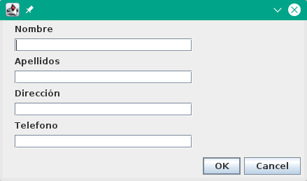
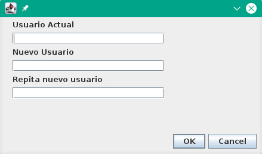
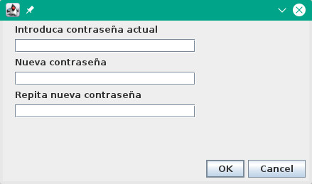

Ayuda de Usuario |
||
Indice de Contenido |
Mi CuentaPantalla principal para los usuarios Pacientes del sistema. En ella se muestra la infomación personal dada a la aplicación y la opción de modificarla si asi se desea. El cambio de contraseña y usuario también se realiza desde esta pestaña. Modificar datosBoton que abre la ventana de dialogo para que se introduzcan los cambios que se quieran realizar sobre nuestra informacion personal. Los campos a modificar son: Nombre, Apellidos, Direccion y Telefono. Para aceptar los cambio se ha de pulsar el boton OK. Modificar UsuarioBotón que abre la ventana de cambio de usuario. El usuario actual es el la direccion de correo electronico usada para acceder al sistema. El nuevo usuario debe ser una nueva direccion de correo electronico. Pulsar OK para aceptar los cambios o cancel para descartarlos Modificar ContraseñaBotón que abre la ventana de cambio de contraseña. En el primer campo se debe introducir la contraseña actual. En los otros dos campos restantes se introduce la nueva clave a usar. Pulsar OK para aceptar los cambios o cancel para descartarlos  |
|
Ayuda para el Sistema de Información de Dieta en Casa |